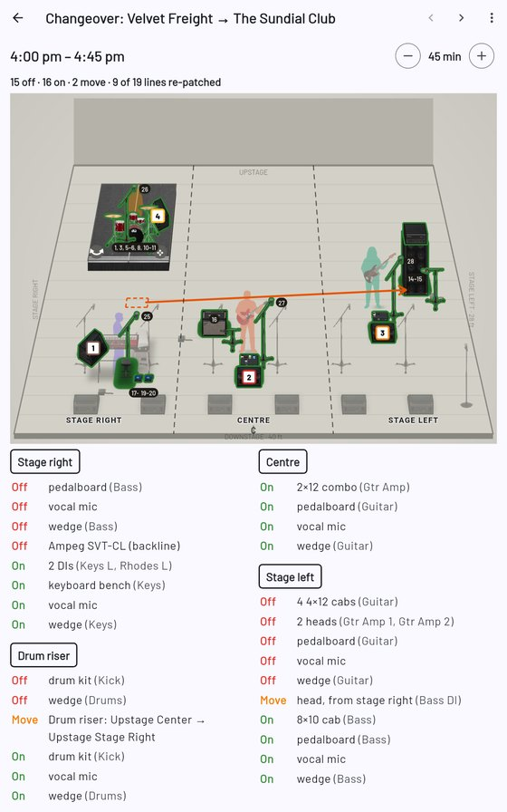
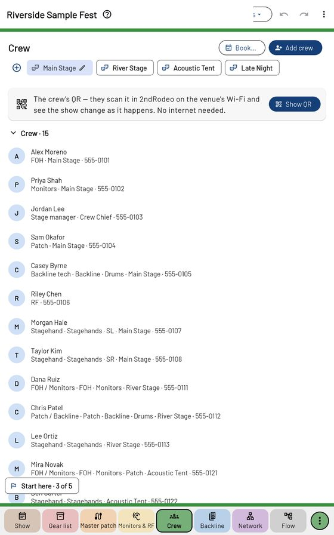

Changeovers and crew

A changeover
Tap a Changeover row between two acts. At the top are its times and − / + 5 min for its length, a one-line count (15 off · 16 on · 2 move · 9 of 19 lines re-patched) and a picture of the next act's stage. Swipe sideways (or ‹ › in the top bar) for the changeover before or after. The ⋮ has Open … plot for either act, Push … to desks (sends the next act's names to the desks) and Desk page.
Below it the changes are by place on the stage: Stage right, Centre, Drum riser, Stage left and Off stage, each a list of Off (comes off), Move (stays but shifts) and On (goes on — the house's backline coming out or being put away is here too, and a piece the house hasn't got is marked short). Tap an area's name or a line to light those pieces on the stage picture; tap again to clear. An area with nothing says Nothing changes.
Then the Patch block (each line that changes, before → after) and, when both bands are on the house, Cables, splits & ears: a mult's plug, a split set up or taken down, their mics on our stands, the processors, the ears. Changeovers are always worked out on the house, whatever the House switch says.
The Crew page
The Crew page is switched off in the app for now; this section describes it as it was.

+ Add crew (name, title, phone, email, jobs, side, the stages they work), or ⋮ → Import a crew list… from a spreadsheet, CSV or pasted list. Call times are in the top bar.
The top bar has Crew QR (beside Call times): it opens the crew's QR and shares the show over the venue Wi-Fi (no internet needed). Crew scan it in 2ndRodeo; a phone's camera opens it in the browser, view only. The window says who has joined; Stop sharing asks first.
⋮ → Book… texts each person a booking for the days you pick; they answer I'm in / Can't make it in 2ndRodeo, and their line shows "Fri ✓ · Sat ✗".
Changeovers as crew jobs
Further down, each changeover is a block of jobs by section — FOH, Monitors, Patch, RF, Backline, Drums, Stagehands — in the order they're done, with how long it should take. Start starts it early; Stage ready ends it — after three changeovers the times follow your crew's own speed. The out (the house's PA, lights and stage) is its own block at the end of the last day.
Who does what
Crew claim their own work in 2ndRodeo: an area for the night (Backline · SL, Drums, FOH…) takes every job in it, and a single open job can be taken with Mine. A job's name on the Crew page is whoever it was given to, else whoever claimed its area; what nobody has shows as a red n unclaimed beside Give out, which hands the rest to each trade's crew. Tap a job's name to give it to someone.
The night
Stage ready ends a changeover and flashes once its time is up; Out done ends the night. ⋮ → Crew sheets prints or texts each person their own list, with their own live link.